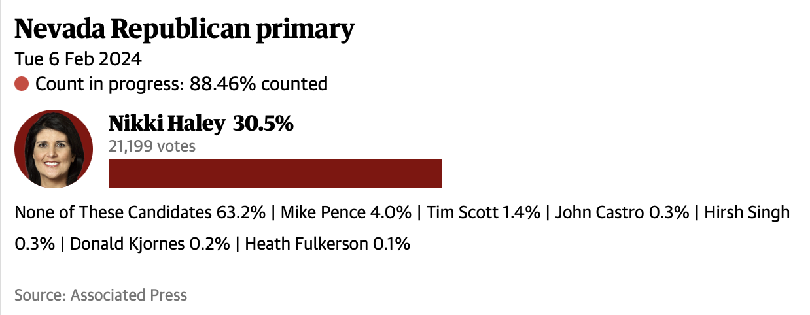
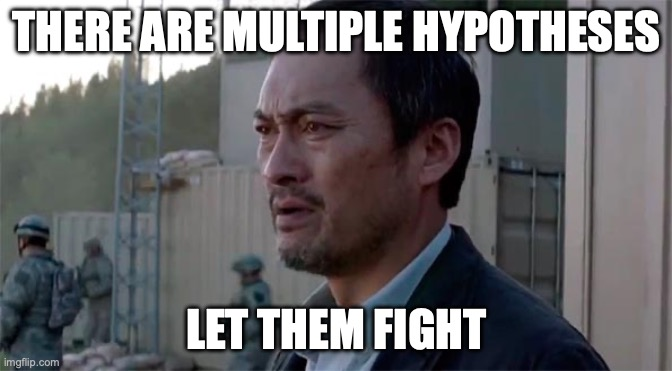

pbinom(21999, 72128, 0.5)[1] 0Brian O’Meara
February 7, 2024
I am not a fan of null hypothesis testing as it’s commonly used in biology. We know that two different populations / areas / species / traits are not exactly equal, so the null hypothesis of no difference must be false. It becomes an exercise of how much power we have to detect a difference, which is a function of the effect size, sample size, and luck. Jeremy Beaulieu and I go further into this in our paper on hisse (https://doi.org/10.1093/sysbio/syw022) and poke at it in other work.
A “teachable moment” happened yesterday (Feb 6, 2024) in the Nevada Republican primary. Primaries and caucuses are ways US political parties select their candidates for office. At this point in the race, there are two “major candidates” remaining in the Republican contest for president: former president Donald Trump and former ambassador Nikki Haley. However, Nevada is running two different contests, a primary (Feb 6) and a caucus (Feb 8); former ambassador Haley is in the former (along with other candidates who are not reported as “major candidates” with active campaigns), former president Trump in the latter.
Thus, in the primary, we have an election where there is just one major active candidate. A null might be that the major candidate will get half of the votes, given that the voters are made of people of the candidate’s own party. Here are the results as of writing, from the Guardian and Associated Press:

Based on this, we can estimate that 72,128 votes have been counted at this point. The probability of getting 21,999 or fewer votes for Haley given that the null hypothesis is true (that she gets half of the votes) is:
This is too small for standard R to report as anything but zero; if we use Rmpfr for more precision, we get a p-value of 1.3e-2449. That is quite a bit smaller than 0.05, the standard threshold for significance (and we could do slightly more complex calculations for things like “support for the sole major candidate should be at least 50% or greater” rather the simple test above, but that’s not the point here).
So, we reject the null that former ambassador Haley got at least half the support. In biology, that is typically taken as support that the alternate hypothesis is true (even though this is not how statisticians say to interpret this). “I rejected the null hypothesis that more parental time with offspring has zero effect on offspring survival, so it’s clear that more time with their parents helps offspring survive.” In the primary case, we can even reject some alternate hypotheses, as well: former vice president Mike Pence got only 4% of the votes, so it is not that voters are preferring him, for example. One alternative could be that voters are preferring the other remaining major Republican candidate, former president Trump. A different alternative could be that the “None of these candidates” option represented a whole set of different preferences with no single candidate dominating.
Another alternative hypothesis could be that voters want senator Bernie Sanders: he did very well in the Nevada Democratic caucus in 2020 after all, maybe those voters are now voting in the Republican primary and want Sanders to run for president. This is of course NOT what is happening. But if we present the hypotheses as \(H_0\): Haley gets at least half the votes, \(H_1\): Sanders must have substantial support, then \(H_0\) is wildly rejected, so \(H_1\) is true if we’re doing the (statistically incorrect) “reject the null, accept the alternate” approach.
So what is a solution? Godzilla movies have the answer:

aka multi-model inference. In the Nevada primary, we can tell that former ambassador Haley beat former vice president Pence because both were included on the ballot; we can’t compare them with senator Sanders because he was not included as an alternative, we just know that neither Haley nor Pence support is the reason for the “None of these candidates” votes. It’s the same with fitting biological models: we can only really tell that model B is better than model A if both are analyzed, not just from rejecting model A.
There are a bunch of ways to do this. I like using the Akaike Information Criterion to compare models based on how much information about reality each one loses. One can use estimates from the best model, or one can weight estimates across multiple models if they have substantial support. Other approaches are to use Bayes factors to compare models, to use reversible-jump MCMC to sample across models, and other approaches. The core for all of these is using information about the likelihood of the data from all the reasonable models, not just use rejection of the simplest, especially since in biology the simplest is almost never true.
This example also shows the importance of the parameters themselves. If former ambassador Haley’s support were 49% it might still be significantly less than half, but a very different story from 30.5%. The story would be different if her support were 0.3%, though also significantly less than the null. It’s another reason why I often advocate for looking at parameter estimates (and even averaging them across decently supported models) rather than just seeing which (flawed, oversimplified) model is preferred. Parameter estimates with confidence or credibility intervals are great for this, too.
To subscribe, go to https://brianomeara.info/blog.xml in an RSS reader.
@online{o'meara2024,
author = {O’Meara, Brian},
title = {Democrat {Bernie} {Sanders} Wins {Republican} {Nevada}
Primary; or, {How} Null Hypothesis Rejection Can Be Misleading},
date = {2024-02-07},
url = {https://brianomeara.info/posts/nullhypothesis},
langid = {en}
}